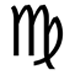

About

- This page will be constantly worked on. It contains detailed information about my Self, Ormus, and some expeeinces I've had with it. Another page just might spring from this one as I obtain new info and expereiences and reorganized old info from years of research to present them in a way that is simple to under, inner, and over stand.
About Me
My name is Strong, Aaron Gerell. By way of obtaining a Computer Science Degree, I have a very strong background in Mathmatics, Physics, Physcial Sciences, and Programming. After getting the degree in 2012 I took it upon myself to study meditation/Self realization, and various unified field theories which looked to unify Relative Physics and Quantum Mechanics (Higg's Boson anyone?). There are actually quite a handful of groups working the subject of unification.
Ormus and I
This is my 4th time birthing Ormus in the last few years before finally deciding create this site.
A funny thing is that as one goes up the ladder towards the golden spectrum they become less and less inclined to implusively spout out certain expereinces that difficult to understand. Seeing how even scientists with their expensive crystal and electromagnetic equipement have yet to pin down such elusive energies I don't blame them. I could understand if quantum and cosmic physicists were even somewhat spooked out by this. Why? These energies apparently make up approximately 95% of the energy so far observed in the universe, the other 5% being physcial atoms. What have I been doing in my life if I've only been mostly concerned with material pursuits? How can I as a human being tap into this realm of energy that apparently dwarfs the energy of the atoms that make up my physcial body, technology, toys, and even favorite foods, drink, and air I breath all put together? Of course these questions are a bit simplified, but I still ask them to my Self even today because they are relevant not only to me but the entire field of physics and quantum mechanics.